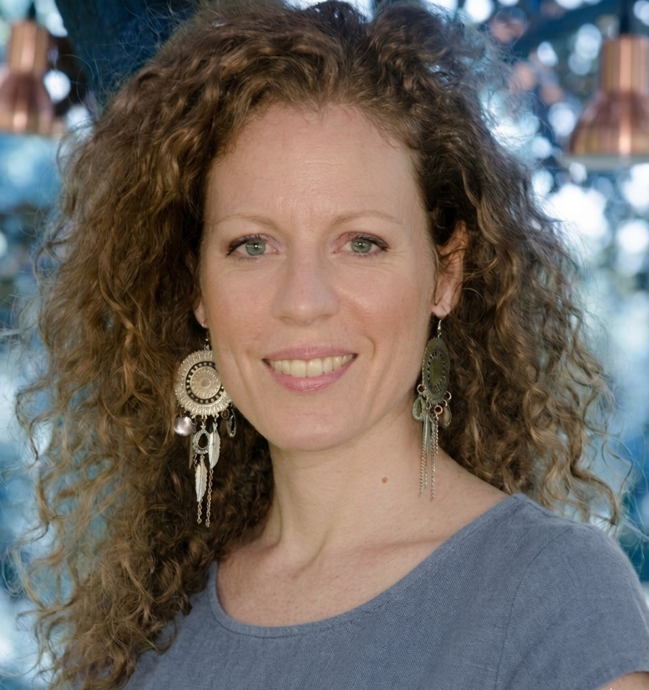

Vorresti dire di no, esprimere ciò che pensi o mettere dei confini, ma il senso di colpa e la paura di deludere ti trattengono.
Counseling integrato · Lugano e online
Allentare
la pressione.
Quando ci si sente stretti: in una relazione, nel lavoro, in un'abitudine o in pensieri che non si fermano.
Leggerezza e libertà possono iniziare anche prima che cambino le cose intorno a noi.

Incontri in italiano, portoghese, inglese.
Su richiesta anche in tedesco, spagnolo e francese.
01 / Per chi
Nelle relazioni
Nel lavoro
Nelle abitudini
Nei pensieri
Sentirsi intrappolati nell'insoddisfazione.
Nonostante i tentativi di cambiare qualcosa, ci si ritrova negli stessi schemi:
Qualcosa non ti piace più, ma tra preoccupazioni, dubbi e stanchezza, lasciare sembra difficile.
Vorresti prenderti più cura di te, muoverti di più o cambiare alcuni comportamenti, ma dopo i primi tentativi torni al punto di partenza.
Vorresti staccare la testa, ma ripensi a ciò che è successo, anticipi quello che potrebbe andare storto e i pensieri occupano tutto lo spazio.
Un piccolo esercizio
Inizia l'esercizio ↗
Di cosa hai bisogno adesso?
Due minuti per orientarti. Non è un test diagnostico.
02 / Le proposte
01 · Individuale
02 · Gruppo
Due modi di incontrarsi.
Per fare spazio a nuove prospettive e alleggerire un po' ciò che pesa.
Counseling individuale
Uno spazio riservato per fare più chiarezza su ciò che stai vivendo, riconoscere ciò di cui hai davvero bisogno e trovare modi concreti per affrontare o cambiare ciò che non ti fa stare bene.
Come si svolge ↗Virada Lab
Uno spazio di apprendimento condiviso in cui il confronto e lo scambio di esperienze aiutano ad allargare lo sguardo e ad allenare competenze concrete per la vita personale, relazionale e professionale.
Scopri Virada Lab ↗
Counseling individuale
Come lavoriamo insieme.
01
Capire cosa sta succedendo
Nel primo incontro parliamo della situazione che ti preoccupa, di cosa hai già provato, dei risultati ottenuti e di cosa vorresti cambiare.
A volte un solo incontro è sufficiente.
02
Trovare alternative
Se decidiamo di proseguire, valutiamo le possibilità a tua disposizione e i piccoli cambiamenti che puoi provare nella vita quotidiana.
03
Verificare i cambiamenti
Facciamo il punto su cosa è cambiato, cosa continua a essere difficile e come affinare il percorso per dare forma alla tua svolta.
Informazioni pratiche
- Durata
- 60 minuti
- Luogo
- Lugano oppure online
- Costo
- Richiedi la tariffa prevista per il tuo paese di residenza ↗
Il counseling non è rimborsato dalle casse malati svizzere - Numero incontri e frequenza
- Concordati insieme e liberamente
Modalità di lavoro
01
02
03
Cosa possiamo fare durante un incontro?
Il dialogo è sempre il punto di partenza. A seconda della situazione, possiamo utilizzare anche attività di ascolto del corpo e movimento, per coinvolgere non solo il pensiero, ma anche sensazioni e intuizioni.
Dialogo
Parliamo di ciò che stai vivendo. Ti faccio domande, condividiamo riflessioni e possiamo utilizzare anche esercizi scritti, per approfondire alcuni aspetti.
Stile di vita
Osserviamo insieme le tue abitudini quotidiane, l'equilibrio tra attività e riposo e i tuoi livelli di energia, per comprendere come si collegano a ciò che stai vivendo e individuare possibili cambiamenti.
Movimento
Se lo desideri, possiamo sperimentare semplici esercizi di movimento, respirazione o postura, per sperimentare leggerezza e libertà anche nel corpo.
VIRADA LAB · IN GRUPPO
Workshop e formazione.
Laboratori esperienziali su comunicazione, relazioni, bisogni e cambiamento, per sperimentare nuovi strumenti da portare nella vita quotidiana e professionale.
Percorsi anche su richiesta, per aziende, organizzazioni e gruppi.

04 / Chi sono
Marlene Masino.
Counsellor SGfB.
Accompagno persone e gruppi nei momenti in cui la vita è, o è percepita, come stretta.
03 / L'approccio
Una mappa per il cambiamento.
Viradas aiuta a comprendere dove e come la vita è diventata stretta, per ritrovare respiro e spazio di movimento.
La mappa VIRADAS orienta questo lavoro attraverso sette dimensioni, corrispondenti alle sette lettere del nome: invita a esplorare ciò che viviamo, come vediamo la realtà e come ci relazioniamo, per riconoscere nuove possibilità di scelta e definire passi concreti per svoltare.
Le sette aree
Tocca le lettere nella mappa per esplorare le aree.
Domande e approfondimenti
FAQ
Counseling
Cos'è il counseling?
È un sostegno professionale per chi attraversa un momento difficile, deve prendere una decisione o desidera cambiare qualcosa nella propria vita.
Attraverso il dialogo, aiuta a comprendere meglio ciò che sta accadendo, riconoscere le proprie risorse e individuare possibili soluzioni, tenendo conto anche delle relazioni e del contesto in cui si vive.
Obiettivi e tempi vengono concordati insieme.
Visita il sito dell'Associazione svizzera di consulenza per maggiori informazioni sul Counseling.
Qual è la differenza tra counseling, psicologia, psicoterapia e coaching?
Conoscere le differenze tra le varie professioni aiuta a capire meglio di che tipo di sostegno si ha bisogno.
La tabella qui sotto offre una sintesi orientativa (non esaustiva).
| Counseling | Psicologia | Psicoterapia | Coaching | |
|---|---|---|---|---|
| Obiettivi | Consapevolezza e cambiamento. | Valutazione e sostegno. | Cura e ristrutturazione. | Performance e risultati. |
| Competenza specifica | Ascolto, consapevolezza e risorse. | Valutazione, test, consulenza. | Diagnosi e trattamento. | Obiettivi e performance. |
| Formazione professionale | Scuola di counseling o Master (almeno 3 anni). | Laurea magistrale + abilitazione (almeno 5 anni). | Laurea magistrale + abilitazione + specializzazione (almeno 9 anni). | Corsi o scuole di coaching (alcuni mesi). |
| Durata del percorso | Breve – medio termine. | Variabile. | Medio – lungo termine. | Breve, orientato all’obiettivo. |
Quali sono gli ambiti e i limiti di intervento?
Il counseling offre sostegno nelle difficoltà personali, relazionali e nei momenti di crisi o cambiamento. Aiuta a orientarsi nelle scelte, affrontare i problemi e sviluppare le proprie risorse e competenze.
Non formula diagnosi, non prescrive trattamenti e non sostituisce cure mediche o psicoterapeutiche. Quando necessario, può affiancarsi ad altri interventi specialistici.
Viradas
Come nasce Viradas?
Viradas nasce dall’incontro con persone e con momenti della vita accomunati dalla sensazione di vivere in uno spazio ristretto, tra ruoli, aspettative o contesti percepiti come senza via d’uscita.
Questa esperienza di costrizione, a volte descritta come entrapment, se protratta nel tempo può compromettere il benessere emotivo e relazionale.
Le pressioni possono essere esterne, legate a condizioni di vita impegnative o a contesti che limitano concretamente la libertà.
Altre volte sono interne: convinzioni radicate, paure che orientano le scelte, modalità di reazione costruite nel tempo.
Non è sempre una questione di volontà. Quando lo spazio interno si restringe, cambiare diventa difficile, a volte impossibile.
Quando invece si recupera anche solo una parte di libertà interiore, anche in contesti complessi, torna possibile scegliere, assumersi responsabilità e ricostruire dignità.
Viradas nasce da questa consapevolezza.
Il nome deriva dal concetto portoghese di virada, “svolta, cambio di rotta”.
La radice latina virare (girare, deviare) risuona con vis (“forza”), l’energia vitale che si attiva quando corpo, mente ed emozioni tornano in dialogo, permettendo di radicarsi, riorganizzarsi e aprirsi a nuove possibilità.
La scelta della forma plurale, "Viradas", sottolinea come il cambiamento non sia un singolo percorso lineare da seguire, ma sia favorito da tanti piccoli momenti e movimenti di svolta.
Quali sono i riferimenti e gli strumenti di Viradas?
Viradas integra diversi riferimenti e strumenti, che operano sul piano della prevenzione, del sostegno e dello sviluppo delle risorse personali:
- Counseling a orientamento gestaltico
- Tecniche di ascolto attivo ispirate al colloquio motivazionale (MI) e alla comunicazione non violenta (CNV)
- Osservazione delle abitudini e dello stile di vita, con riferimenti alla naturopatia e alla medicina tradizionale cinese
- Esercizi di consapevolezza corporea ispirati allo yoga
Iniziare un percorso
Come faccio a capire se Viradas è adatto a me?
Non è necessario saperlo prima di iniziare.
Un primo contatto telefonico gratuito o un incontro possono aiutarti a capire se il counseling è ciò che cerchi e se il mio modo di lavorare fa per te.
Potremo parlarne insieme, senza alcun impegno a proseguire.
Contattami ↗
Devo avere un problema preciso per iniziare?
No.
Non è necessario sapere esattamente quale sia la difficoltà specifica.
Puoi intraprendere un percorso anche per conoscerti meglio, esplorare nuove possibilità o dedicare attenzione a un momento della tua vita.
Come si svolge un incontro di counseling Viradas?
Leggi qui come si svolge ↗
Quanto dura un percorso?
Non esiste una durata prestabilita. A volte basta un solo incontro per avviare il cambiamento.
Frequenza e numero degli incontri vengono concordati insieme, in base alle tue esigenze e agli obiettivi del percorso, e possono essere rivalutati nel tempo.
Posso seguire un percorso di counseling mentre faccio psicoterapia?
Sì, quando i due percorsi hanno finalità distinte e compatibili.
È importante valutarne l'opportunità insieme ai professionisti coinvolti, evitando sovrapposizioni tra counseling e psicoterapia.
Quanto costa un incontro e dove si svolge?
Gli incontri durano 60 minuti e si svolgono in studio a Lugano oppure online.
Le tariffe sono adattate al paese di residenza. Non è previsto il rimborso dalle casse malati svizzere.
Contattami per conoscere tariffe e indirizzo ↗
Gli incontri sono riconosciuti dalle cassa malati svizzere?
Il counseling e le attività proposte non rientrano tra le prestazioni sanitarie e non sono riconosciuti dalle casse malati svizzere (LaMal/LCA).
Per questo motivo, gli incontri sono a carico della persona.
Contatti
Per informazioni
Per informazioni
o un incontro
In studio a Lugano oppure online.
Il counseling non è psicoterapia né un intervento sanitario. In caso di forte sofferenza o di violenza è necessario rivolgersi a servizi specializzati.
Collaborazioni
Rete e partner.
Incontri, progetti e collaborazioni con altri professionisti.
Proponi una collaborazione ↗